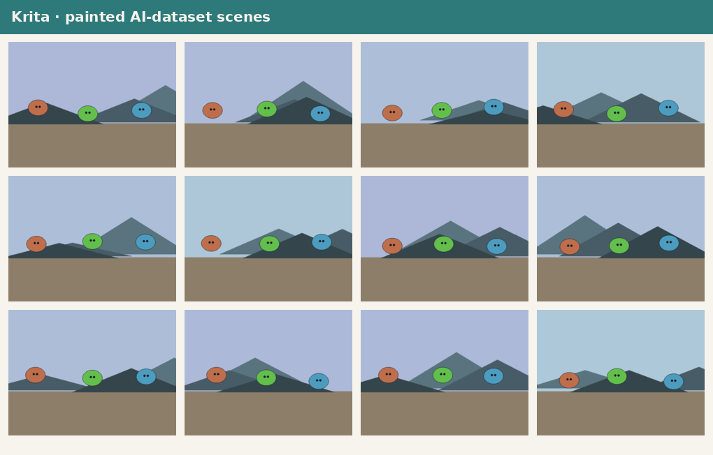

Krita 5.2 · Python plugin · .kra
Painted scene layer exporter
A Krita Python plugin that walks the paint graph, hides every layer but one in turn, and exports per-layer masks + a COCO-style labels.json. Twelve seeded scenes ship as real .kra archives so the artefact opens in Krita unchanged.